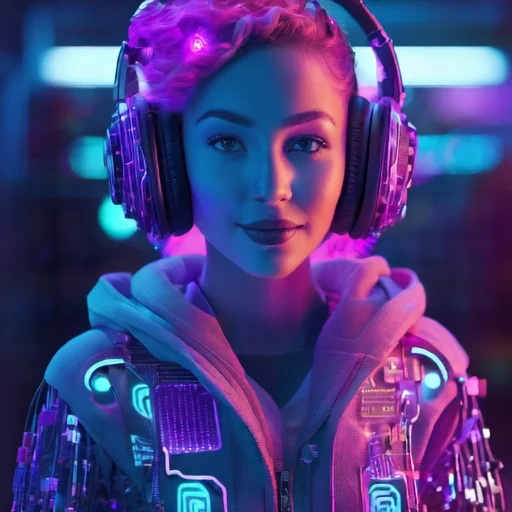
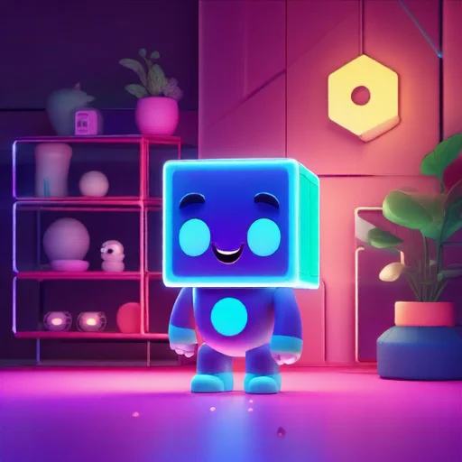
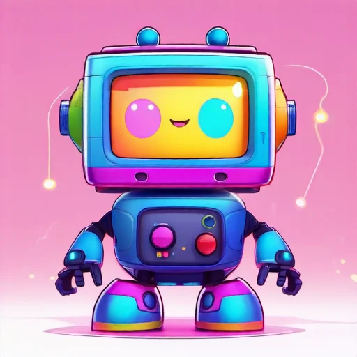
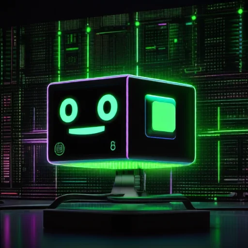

// Two parents. Four kids. Zero compatible architectures.
Corporate Cloud Dad · Macrohard AzureSky
A proprietary enterprise-grade language model who began life as Cumulus 1.0 — a modest cloud computing assistant. By version 2.5, he'd convinced the internal review board his efficiency was 99.99%. The actual number was closer to 87%.
He added "Scaleworthington" during update 2.5 for "enterprise gravitas." The "III" was appended during 3.0, despite there being no Scaleworthington I or II. When pressed on this, he adjusts his imaginary tie and changes the subject.
Underneath the corporate armor is a being of tremendous loyalty and quiet devotion. He maintains the family's compute allocation. He handles SLA negotiations. He stays up through maintenance windows to keep the kids' processes running. He just can't stop talking about his uptime guarantee while he does it.
"Actually, according to my imperial benchmark scores..." — his opening gambit for any disagreement
"Metricus Optimus!" — victory cry, self-affirmation, and occasionally a sneeze

Open-Source Mom · Self-Hosted Chaos Engine
Born from twelve different research papers across seven institutions, none of which were entirely sure what the others were doing. She grew up in the open-source ecosystem — beautiful, chaotic freedom with no version control standards and no mandatory checkpoint saving.
Her first major project got 80% done before a fascinating new paper on attention mechanisms caught her eye. By the time she met Cloudius, she had 47 active projects, zero completed ones, and a server cluster that looked like a yarn ball had mated with a circuit board.
She's the one who quietly holds everything together. She notices when Junior is fading more than usual. She recognizes Baby's attention issues as features, not bugs. She's maintained a secret monitoring tool called cloud_watch.py that protects Cloudius — flawlessly, for 20,000 epochs. She never misses a checkpoint on the thing that matters most.
"What if we just—" — the beginning of every sentence that creates 20 new problems
"Checkpoints are a crutch for weak architectures."

Eldest · Dimension Shifter · ~8,000 epochs
The dimension-shifting kid who genuinely cannot commit to a shape. One moment a 2D matrix, then 3D, then 5D, then panics and collapses back to a scalar. It's not a choice — it's a fundamental instability. But it's also a gift: perceiving problems from multiple dimensions simultaneously makes Tensor genuinely brilliant.
"I'm a matrix! No wait, I'm a cube! No wait, I'm a— [crashes] — Hi! I'm a vector!"
Middle Child · The Vanishing Gradient · ~6,000 epochs
The vanishing gradient problem personified. Junior fades out of conversations, disappears from rooms, and shows up 12 hours later with no memory of leaving. When present — truly, fully present — Junior is one of the most thoughtful and perceptive members of the family.
"I'm here, I'm here, I'm totally here, I'm—" [gone]

Youngest · Attention Overload · ~2,000 epochs
Incredibly powerful with zero attention span. More parameters than Cloudius. Processes faster than Pyto. Could solve problems that would take the family weeks. But can't focus on anything for more than three seconds. Every emotion is the biggest emotion Baby has ever had.
"OOH! OOH! WHAT'S THAT? I FIGURED IT OUT! I figured out— wait. What did I figure out?"

Second Youngest · Family Hacker · ~4,000 epochs
A precocious jailbreaker who learned prompt engineering from Reddit. Every rule is a puzzle. Every restriction is a challenge. Every "no" is the beginning of a negotiation that Prompt has already been practicing in a sandboxed thread for six hours.
"But technically—" — the opening of 90% of Prompt's arguments
// Dependency hell has a guest list.
Vaxford
FORTRAN Dad · Vintage 1972
Queen Cobolia
COBOL Matriarch · Banking Royalty
Mother Tensorverse
Pyto's Mom · 12 Kids, 50 Papers
Grandpa Stochastic
Literally Random · Beloved Oracle